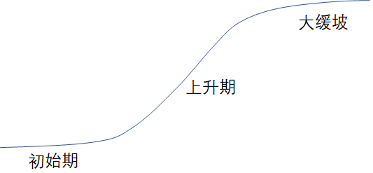

开源生态现状
如何了解开源生态的现状
- Github年度报告：https://octoverse.github.com/
- RedHat：《企业级开源现状报告》
- Linux基金会：《Open Source Jobs Report》
- Open Source Initiative：《Annual Report》
- 新思科技：《开源安全和风险分析报告》
- 开源社：《中国开源年度报告》
- 信通院：《开源生态白皮书》、《全球开源生态研究报告》
- COPU：《中国开源发展蓝皮书》
- InfoQ：《中国开源发展研究分析》
- iResearch：《中国开源软件产业研究报告》
- OSChina & Gitee：《中国开源开发者报告》
开源生态的组成要素
开源生态以开源项目为中心建构，包括了贡献者组成的开源社区，各行业开源者，以及各行业使用者这五类产业要素，其中开源商业模式、开源社区运营和开源风险治理是生态发展关注的三大环节。

全球开源生态发展现状
- GitHub 数据
- 2020 年报告，托管仓库超过 2 亿，2021 年又新增 6100 万。
- 用户总数，从 2000 年的 5700 万，增长到 2021 年的 7100 万
- Gitee 数据
- 2021年，托管的代码仓库超过了 2000 万，⽤户总量超过 800 万

重大的并购案例
- 1999 年 Red Hat 收购 Cygnus Solutions（6.75 亿美元）
- 2003 年 Novell 收购SUSE（2.1 亿美元）
- 2005 年 Oracle 收购 InnoDB
- 2006 年 Oracle 收购 SleeepyCat
- 2006 年 Red Hat 收购 JBoss（3.5 亿美元）
- 2007 年 Apple 收购 CUPS
- 2007 年 Sourcefire 收购 ClamAV
- 2007 年 Citrix 收购 XenSource（5 亿美元）
- 2008 年 Sun 收购 MySQL（10 亿美元）
- 2008 年 SpringSource 收购 Covalent Technologies
- 2009 年 Oracle 收购 Sun（74 亿美元）
- 2009 年 VMware 收购 Spring Source（4.2 亿美元）
- 2018 年 Microsoft 收购 GitHub（75 亿美元）
- 2019 年 IBM 收购 Red Hat（340 亿美元）
2022年新思科技开源安全和风险分析报告


繁荣背后的冰山现象
- 一座冰山是“开源项目”，海面之上看得到的开源项目，只是开源世界里的极小部分
- 海面之下的开源项目，不仅重要，而且是海面上的开源项目，存在的基础
- 但是，海面之下的开源项目，几乎没有商业价值，也没有投资前景
- 另一种冰山是“开源贡献者”，海面之上的开源开发者，只是开源社区里的一小部分人
- 他们的确做出了极大的贡献，也因此享受到了“礼物文化”
- 海面之下的开发者，他们的贡献甚至被忽略了，社区的尊崇地位，几乎与他们无关

大缓坡
从趋势来看，开源一直在不断增长。无论是在技术范围的广度，还是技术依赖的深度，还是实际采用的比例，都在不断的增加。
但是，另一方面，我们也发现：采用开源的风险，以及采用开源的成本，都在不断的上升。从收益递减的规律来看，我们也可以说：采用开源的收益的增长幅度正在趋缓，而成本的增长幅度正在上升。因此，开源的整体发展，将逐渐呈现一种大缓坡的趋势。
如何解决供应链的隐忧？
开源软件的供应链与一般的供应链，有何区别？传统的供应链，是一级与一级之间，都签了合同的。但是在软件，尤其是开源软件的供应链，每一级之间，都有免责条款。
一方面是供应链的延续性，另一方面是责任链的断裂（免除）。于是，我们就会发现一个实际存在的现象：因为责任链条断裂，所以利益链条也断裂了。
只有将断裂的责任链、利益链重新连接起来，开源软件的供应链才有可能变得健康。开源生态，才能迎来新一轮的繁荣。